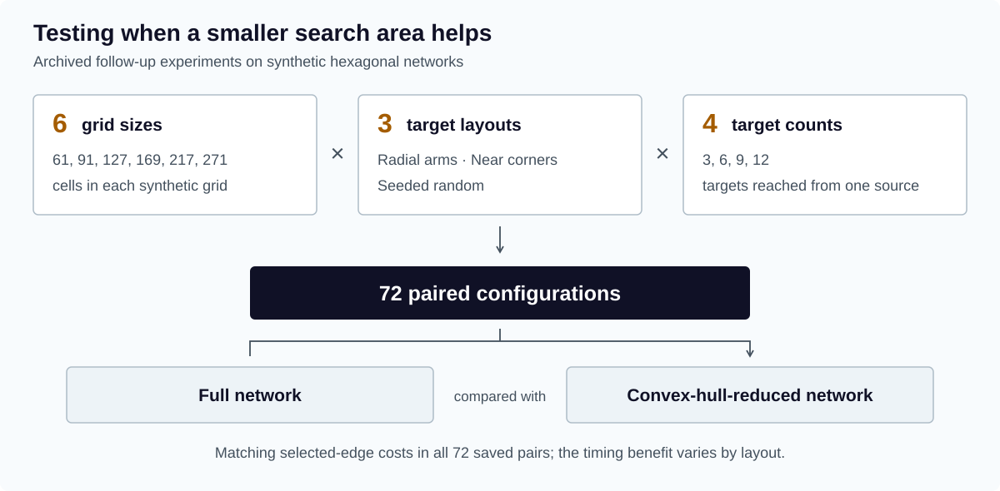

Doctoral Research
Finding a low-cost road network from one starting point to several destinations.
What I did
I developed an integer-programming model in Python and R to choose connections that share paths between destinations.
Result: The work formed part of my PhD, completed in May 2024. The experiments examined the total cost of connecting one starting point to several destinations.
Tools
- Python
- R
- Integer programming
- MIP
- OMPR
Results depend on the network, solver settings, and assumptions used to reduce the search area.
Follow-up experiments on synthetic networks
Follow-up work after the 2024 dissertation extended the R implementation with a multi-commodity flow formulation and a systematic comparison of full and convex-hull-reduced networks. The archived experiments span six hexagonal grid sizes, three target layouts, and four target counts.
All 72 saved full/reduced comparisons have matching selected-edge costs. This supports cost preservation for those tested configurations. It does not establish that a convex-hull restriction preserves the best solution on every network.

Target placement determines the benefit
These representative saved observations use a 271-cell grid with 12 targets. Concentrated radial targets leave a much smaller model. Targets near the corners can span the whole grid, leaving no nodes to remove and adding preprocessing overhead.
For radial targets, the recorded times cover model construction and solving; hull preprocessing happened before the timer. The reduced near-corner and random timings also include hull computation. Each row is one saved run pair, so the times describe these experiments rather than a general performance guarantee.
| Target layout | Nodes retained | Selected-edge cost | Recorded time (seconds) |
|---|---|---|---|
| Radial arms | 271 / 31 | 12 / 12 | 71.83 / 6.60 |
| Near corners | 271 / 271 | 54 / 54 | 38.04 / 42.46 |
| Seeded random | 271 / 99 | 32 / 32 | 37.81 / 13.92 |
Implementation and validation scope
The follow-up model assigns one flow to each target while charging shared edges once. It also supports targets that must be endpoints, instead of allowing every target to serve as a waypoint.
The repository includes checks against Dijkstra for single-target cases, comparisons between HiGHS and GLPK, and scenarios with barriers, narrow corridors, and different target layouts. The figures and table here summarize archived results; the solver and test suite were not rerun for this presentation.
Project gallery
Historical portfolio screenshots. 3 images. Select an image to view it full size.


Technical details
The University of Texas at Dallas · Doctoral research
Choosing a separate shortest route to each destination can miss opportunities to share parts of the network.
- Represent roads and connections as a vector network.
- Use integer programming in Python and R to choose connections with low total cost.
- Use convex-hull preprocessing to reduce the search area.
Dissertation: Modeling Integer Programming To Multiple Target Access Problem. The University of Texas at Dallas, 2024.